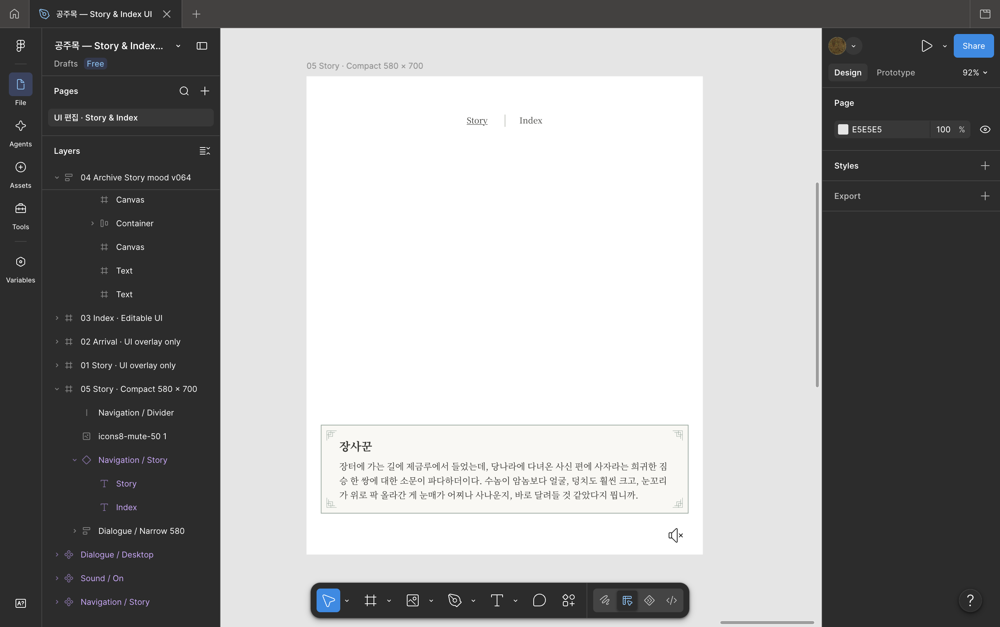
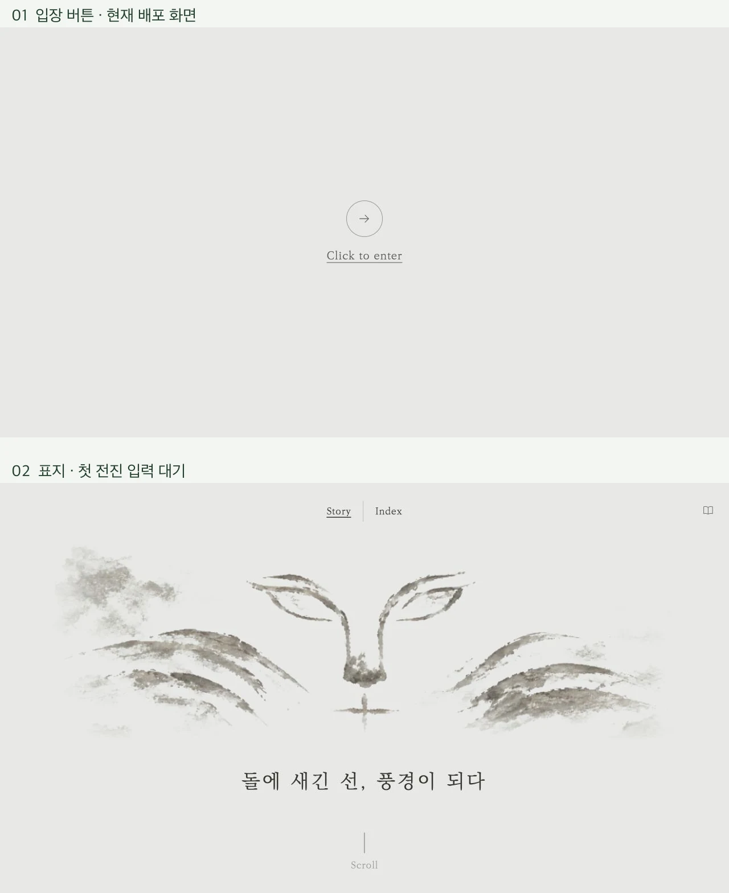

Story · 06
Story UI와 웹 구현
Figma 화면 설계와 진입·이동·대화·소리의 UI 구현.

아래 실행용 프롬프트는 완성본을 기준으로 재구성한 문구이며, 과거 입력 원문이 아닙니다.
진입과 시작

한 번에 하나의 행동을 안내하는 시작 화면
- 입장
- 로딩 후 중앙 버튼 표시
- 표지
- 먹선 그림과 제목, 넓은 여백
- 시작
- 첫 전진 스크롤·드래그로 도입 연결
전체 프롬프트 보기전체 프롬프트 접기
첨부한 최종 Story 진입 화면을 기준으로 공주목 석사자 웹의 입장 UI를 구성해 주세요. 종이색 #e8e8e6과 먹색 #373734, 얇은 KoPubWorld Batang Light를 기본으로 하고, 장식보다 중앙 버튼과 여백이 먼저 보이게 해 주세요.
첫 상태는 로딩입니다. 화면 중앙에 작은 “Loading...” 한 줄을 두고, 이미지와 글꼴 준비가 끝나면 원형 화살표 입장 버튼으로 바꿔 주세요. 원은 64px, 1px 테두리, 안쪽 화살표는 약 25px입니다. 그 아래 “Click to enter”를 16–20px 범위로 놓고 원과 문구 사이에 약 19px 간격을 둡니다. 버튼에 진한 배경이나 그림자를 넣지 말아 주세요.
입장 버튼을 누르면 0.7초 정도의 차분한 페이드로 기존 사자 먹 그림 표지가 나타나게 해 주세요. 표지에서는 첫 전진 스크롤 또는 드래그가 도입 영상을 시작하도록 상태를 구분합니다. 첫 입력이 미디어 준비 중에 들어와도 준비 후 이어지도록 하고, 반복 입력으로 도입을 여러 번 시작하지 않게 해 주세요.
Story / Index 내비게이션과 기획·제작 책 아이콘은 기존 웹의 위치와 노출 순서를 유지합니다. 소리 버튼은 실제 여정 시작에 맞춰 나타나게 합니다. 클릭 가능한 영역은 작은 아이콘보다 충분히 넓게 만들고, Tab 초점에는 문구 밑줄 등 명확한 표시를 주세요.
1440×900 데스크톱, 390×844 세로 화면, 844×390 가로 화면에서 중앙 정렬과 안전 여백을 확인할 수 있는 상태를 정리해 주세요. ‘기본·초점·호버·입장 후·로딩’을 구분하고, 움직임 줄이기 설정에서는 맥동과 페이드 의존도를 낮춰 주세요. 기존 표지 그림이나 영상의 내용을 새로 생성하지 않고 그대로 연결합니다.
이동·대사·소리

풍경과 인물을 중심에 둔 조작과 대사
- 이동
- 스크롤·드래그에 따른 전진과 한 프레임 정지
- 대화
- 인물명과 대사, 반투명 한지 패널
- 소리
- 음소거 상태와 대화 종료의 연결
전체 프롬프트 보기전체 프롬프트 접기
공주목 Story의 최종 풍경 영상 위에 얹는 UI를 제작해 주세요. 첨부한 장사꾼 대사 화면의 한지 패널·얇은 명조·모서리 문양을 기준으로 삼고, 실제 영상과 인물은 그대로 유지합니다.
상단 중앙에 Story / Index를 배치해 주세요. 두 항목은 얇은 세로선으로 나누고 현재 Story에는 밑줄을 줍니다. 평소에는 풍경이 그대로 보이게 하되, 배경이 복잡하거나 어두운 순간에는 옅은 종이색 면으로 글자 대비를 확보합니다. 이동 가능 상태의 하단 중앙에는 작은 세로선과 “Scroll”, 오른쪽 아래에는 44px 누름 영역의 소리 버튼을 둡니다.
대화 상태에는 화면 하단의 반투명 한지 직사각형 패널을 보여 주세요. 인물명을 위, 대사를 아래에 놓고, 본문은 화면에 맞춰 13–25px 정도, 줄간격 1.65, 제목은 본문보다 약 1.31배 크게 합니다. 모서리 장식과 본문 간 여백을 확보하고 굵은 글자·강한 그림자는 쓰지 않습니다. 인물 얼굴을 가리지 않도록 패널의 높이와 위치를 조절하며, 좁은 가로 화면에서 긴 대사는 패널 안에서 스크롤되게 합니다. 소리 버튼을 패널 밖의 안전한 위치에 둡니다.
상태는 ‘수동 이동·정지·인물 도착·대화·장면 전환·마지막 안내’로 구분해 주세요. 수동 이동이 멈추면 마지막으로 도달한 디코딩 프레임 하나를 유지하고, 잔여 보간이나 앞뒤 장면 혼합이 정지 화면에 남지 않게 합니다. 원본 영상 속 내용을 수정하거나 다른 스틸을 끼워 넣지 않습니다. 인물 대화와 정해진 전환은 자동으로 진행하고 대사가 끝나면 패널이 사라지게 합니다.
음소거 버튼에는 현재 상태와 다음 행동을 스크린리더에 전달하고, 음소거 상태에서도 대화 종료와 다음 흐름이 정상적으로 이어지게 합니다. 마지막 장면이 종이색 화면으로 정리되면 중앙에 ‘아카이브 탐색’을 표시해 Index로 이동하게 합니다. 데스크톱·모바일 가로/세로에서 얼굴, 대사, 소리 버튼이 서로 가려지지 않는지 확인해 주세요.